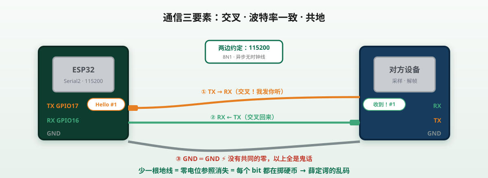

阶段二 · 输入与输出 ｜ 难度：★★★☆☆ ｜ 预计用时：45–60 分钟
本课材料：ESP32 开发板 ×1、USB 线 ×1、面包板、杜邦线若干（最好再有一块任意开发板/USB-TTL 模块，没有也能学完） 无硬件替代：Wokwi 里放一块 Arduino Uno 与 ESP32 对接，或用串口监视器自环演示

你将做出：ESP32 每秒发出一句"你好，我是 ESP32 #1"，另一个设备回它一句"收到！"—两颗芯片只用两根线（加一根地线）就聊起了天。 同时你会亲眼看到：少接一根 GND，字全变乱码。
前四课，芯片的所有"对话"（串口监视器）其实都借道 USB 芯片——那是电脑和板子在聊。这一课拆掉中介，让两颗芯片的引脚直接对上。第 1 课 GND 词条里那句"共地是一切通讯的前提"，现在兑现。
本课学习目标（完成后你将拥有）：
Serial2（或任意自定义引脚）收发数据，读懂 available()/read()第 1 课就用了 Serial.println("LED ON")——但你可能从没细想：这行字到底走哪根线到电脑的？
答案：ESP32 的 GPIO1（TX0）/ GPIO3（RX0）连到板上的 USB 转串口芯片（CP2102/CH340），再经 USB 线进电脑。你在串口监视器里看到的每个字，都是从这两个引脚"物理流出去"的：
Serial.println("Hi") → GPIO1(TX0) 引脚电平翻飞 → USB 芯片 → 电脑屏幕
第 1 课引脚图里我们标过：TX0/RX0 别接外设——因为它们正忙着给你的串口监视器打工。这一课，我们用另一组串口（Serial2，默认 GPIO17/GPIO16）去和外部设备聊天，互不打扰。
UART（Universal Asynchronous Receiver/Transmitter，通用异步收发器） 是嵌入式最基础的通信协议。它的哲学简单到可爱：
一根线只管往外说（TX），一根线只管往里听（RX）。没有时钟线，双方事先约好语速，一个字节一个字节地蹦。
ESP32 对方设备
┌─────┐ ┌─────┐
│ TX17├───────────────────────────→│ RX │ 你说，我听
│ RX16│←───────────────────────────┤ TX │ 你说，我听
│ GND ├═══════════════════════════╤╡ GND │ ⚡ 共同的"零"！
└─────┘ ╘══════╛
三个要点，逐个拆：
"我发射的，必须是你的接收"——像说话：我的嘴对你的耳。同名相连（TX-TX）是新手第一大错，两边都在说、没人听，什么也收不到。
同步通信有时钟线打拍子；UART 没有——它靠双方事先约定相同的波特率（Baud Rate），比如都按 115200 bit/s 发收：
发方：按 115200 的节奏把电压翻飞（1、0、1、1…）
收方：按 115200 的节奏去采样解读
↑ 两边速率必须一致，差一点 → 采样点漂移 → 字节全错 → 乱码！
串口乱码的两大元凶就埋在这：波特率不一致，或（本课重点）下面这个——
TX 线上传的是电压：3.3V 算 1、0V 算 0。但"3.3V 是相对谁的？"
答案：相对 GND。 收方判断"这根线上是 3.3V 还是 0V"，必须拿自己的 GND 当参照去量。两颗芯片 GND 不相连，就不存在共同的零电位——你眼中的 3.3V，在它眼里可能是飘忽的噪声。
这就是第 1 课 GND 词条那句"共地是一切通讯的前提"的物理含义。空口无凭——本课的破坏性实验会给你现场。
| 从 | 到 | 说明 |
|---|---|---|
| ESP32 GPIO17（TX2） | 对方 RX | 交叉！我发你听 |
| ESP32 GPIO16（RX2） | 对方 TX | 交叉！你发我听 |
| ESP32 GND | 对方 GND | ⚡ 必接——本课主角 |
| 对方设备电源 | 按其要求 | 3.3V 器件共 3V3；5V 器件注意电平兼容（第 6 课伏笔） |
对方设备三选一：
Wokwi 方案：模板里加一块
Arduino Uno，ESP32 的 17/16 交叉接 Uno 的 0/1（RX/TX），GND 务必相连；或用自环法一块板跑通。
// ============================================
// 第 5 课：UART 双机对话（ESP32 端）
// ============================================
const int TX_PIN = 17; // Serial2 默认 TX（可改任意输出脚）
const int RX_PIN = 16; // Serial2 默认 RX
unsigned long lastSend = 0;
int counter = 0;
void setup() {
Serial.begin(115200); // USB 口：给电脑看日志
Serial2.begin(115200, SERIAL_8N1, RX_PIN, TX_PIN); // 对外口：给对方设备
Serial.println("UART 通信启动（电脑日志口）");
}
void loop() {
// —— ① 每秒主动发一句 ——
if (millis() - lastSend >= 1000) {
lastSend = millis();
counter++;
Serial2.print("Hello from ESP32 #");
Serial2.println(counter); // 发给对方
Serial.print("[TX] 发出: Hello #"); // 同步在电脑上留底
Serial.println(counter);
}
// —— ② 随时监听对方回话 ——
if (Serial2.available()) { // 收到字节了吗？
String msg = Serial2.readStringUntil('\n'); // 读到换行为止
msg.trim(); // 去掉末尾换行/回车
Serial.print("[RX] 对方回: ");
Serial.println(msg); // 转播到电脑屏幕
}
}
Serial2.begin(115200, SERIAL_8N1, RX_PIN, TX_PIN);
开第二路串口。四个参数是 UART 的"通用约定格式"：
115200 波特率——双方必须一模一样（乱码头号元凶）
SERIAL_8N1 数据格式：8 位数据、无校验(None)、1 位停止位——业界默认，背下来
RX_PIN, TX_PIN 引脚映射——ESP32 的串口引脚可自由重映射，这是它的优点
两路 Serial 并存：Serial 给电脑，Serial2 给对方
本课的核心架构：日志和通信分道扬镳。调试信息走 USB 让你随时看，业务数据走 17/16 和对方聊——互不污染。工程上这叫"带外管理"：调试通道永远别混进业务通道。
Serial2.print vs Serial2.println
println 自动补 \n。收方用 readStringUntil('\n') 正是以它为界——发收双方对"一句话到哪结束"的约定，就是最原始的消息边界协议。
if (Serial2.available()) + readStringUntil('\n')
available() 是"信箱里有信吗"——非阻塞！没信立刻跳过，loop 继续转（第 3 课的 millis 思维在这里复用）。有信才读，读到换行为止。
msg.trim()
串口数据常带 \r\n 或尾部空格，trim() 一剑削掉——永远别信任从线路上读到的原始字符串，清洗是肌肉记忆。
按接线表正常跑通后（对方能正确回话），做这个实验：
步骤：只拔掉那根 GND 连线，其他都不动，复位两块板。
现象：对方收到的不再是
Hello from ESP32 #1，而是随机乱码（???、ÿÿÿ、半个字、完全随机的字符），时好时坏、毫无规律。
断开地线：数据包还在 TX 线上跑（橙色），但对方失去了“零”的参照——采样掷硬币，接收窗口变乱码。接回地线立刻恢复。第 9 课讲帧格式时，我们再回来解释乱码的具体形态。
为什么会这样？ 对照新知识 ③：
🔑 本课最重要的一句话： 通信三要素 = TX/RX 交叉 + 波特率一致 + 共地。 前两个错了有规律（完全没反应/固定乱码），第三个错了是"薛定谔的乱码"——排查串口问题时，先摸地线。
把这个实验现象记进笔记本：第 9 课讲 SPI/I2C 时你会发现，所有有线通信都逃不过这三条。
[TX] 发出: Hello #1,2,3… 每秒滚动[RX] 转播——双向通了delay(全部打勾 → 你打通了芯片间的物理通信链路，并且亲手验证了"共地"不是教条而是物理。进入第 6 课。
Hello #N 改成读到什么原样回发（echo），在电脑上看到"自己对自己说话"。Serial2 改成 9600、对方不动（115200），观察乱码形态——有规律的错（全是乱码）和拔地线无规律的错有什么不同？记下对比，第 9 课讲帧格式时你会秒懂。readStringUntil 换成逐字节 Serial2.read() + Serial.println(b, HEX)，直接看原始字节——工程排查串口的标准姿势。| 现象 / 报错关键词 | 原因 | 解决办法 |
|---|---|---|
| 完全收不到，对方零反应 | ① TX/RX 没交叉（TX-TX 同名相连）② 波特率不一致 ③ GND 断开 | 交叉重接；两边都设 115200；先摸地线（本课实验） |
| 收到但全是乱码 | 同上三条（最常见是 GND 或波特率） | 按"通信三要素"逐条排查；乱码无规律 → 优先怀疑 GND |
| 收到半句话后卡住 | 发方没发 \n，收方 readStringUntil('\n') 一直等 |
确认发方用 println；或改用带超时的读法 |
| 对方偶尔回对、偶尔乱 | 接触不良 / 地线太细太长 / 共地路径绕远 | 换短粗杜邦线；两板共用同一电源地 |
Serial2 收发引脚不生效 |
引脚号写进了 begin 的错误位置 | 参数顺序：begin(波特率, 格式, RX脚, TX脚)——先 RX 后 TX |
| 电脑口（Serial）没输出 | 监视器开的是别的 COM 口或波特率不对 | 选对 COM；监视器设 115200 |
| 5V 设备接上后行为异常/发烫 | 电平不兼容——ESP32 不耐 5V | 立即断电；第 6 课讲电平真相与电平转换 |
| 通信干扰对方程序跑飞 | 共地环路噪声 / 对方中断被串口打断 | 短线、共地、必要时降低波特率；深层原因第 10 课任务视角再看 |
通信三要素你已掌握，但本课接线时你可能已经嘀咕过："哪些脚能随便接？哪些脚接了会出事？" 第 6 课：引脚大清算——第 1 课三原则、GPIO34 仅输入、电位器接 34 的悬案、strapping 脚的脾气、浮空引脚、ADC2 与 Wi-Fi 冲突、5V 电平……所有欠你的引脚答案，一次全拆。这是全系列承上启下的"总清算课"，手里已有 5 个课的证据，看完你就是"引脚安全"半个专家。
本课程系列：从点亮一盏灯，到设计一台会自己思考的机器。